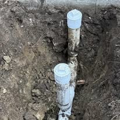
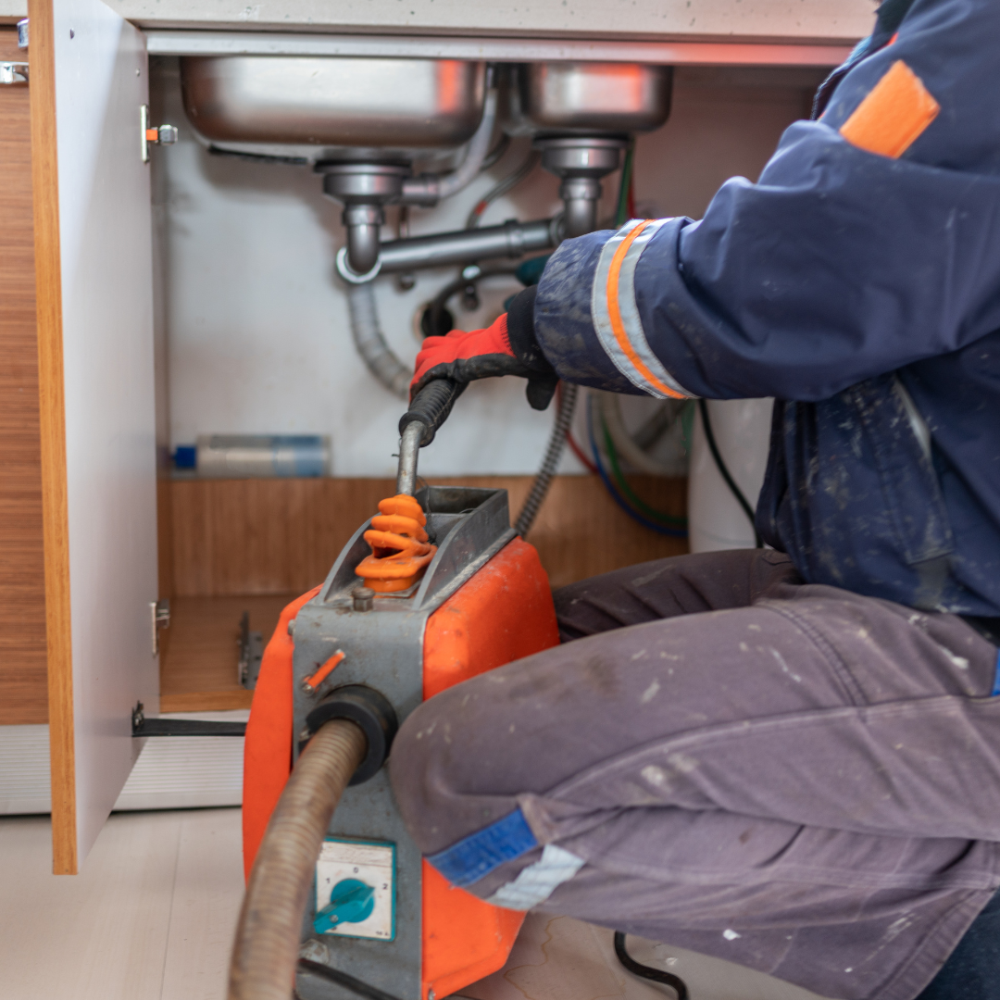
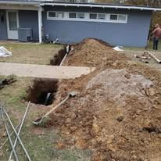

Sewer line repair in Boynton Beach starts with a camera, never a guess. Your lateral is the private pipe that carries waste from the house to the city main, and once it cracks, sags or fills with roots, no amount of drain cleaning keeps it clear for long.
We push a camera the full length of the line and record it. You see the same footage we do: the joint that has separated, the belly holding water, the root mass at the seam. Then we price the options.
Sometimes that is a four-foot spot repair. Sometimes it is lining the existing pipe from the inside. Sometimes the pipe is beyond saving and a new lateral goes in. All three are honest answers to different problems.

Warning signs
Symptoms of a Failing Sewer Line or Broken Main Drain
A sewer lateral rarely fails all at once. These are the signs that the pipe itself is the problem.
- Multiple fixtures backing up at the same time
- Sewage odor in the yard or near the cleanout
- Repeat main line clogs every few months
- Gurgling toilets when the washer drains
- A soggy or unusually green strip across the lawn
- Sinkholes or dips in the yard above the line
- Rodent or insect activity around the cleanout
- Slow drainage that returns weeks after a clearing
If a plumber has cleared your main line more than twice in a year, stop paying for clearings and get the pipe on camera.
What the visit includes
Sewer Line Repair Methods: Camera Inspection, Lining and Replacement
The pipe condition decides the method. We show you the footage before recommending anything.
Camera inspection
Full-length recorded inspection with locating, so we know the depth and position of every defect.
Spot repair
Excavate one short section, replace the broken length, backfill and restore. Best for isolated damage.
Pipe lining
A resin liner cured in place inside the old pipe. No trench across the yard and a smooth new interior wall.
Full replacement
A new PVC lateral from the house to the city connection when the old pipe is collapsed or badly bellied.
Sewer backing up again?Call for a recorded sewer camera inspection before you pay for another drain clearing.

Trenchless options
Trenchless Sewer Repair vs Full Sewer Line Replacement
Once the camera footage is in, the decision comes down to how much sound pipe you still have and what sits above the line.
Cured-in-place lining
A resin-saturated liner is pulled through the existing pipe and cured, forming a new jointless pipe inside the old one. There is no trench across the yard, work is usually done in a day, and the smooth interior resists roots at the old joints. It requires a host pipe intact enough to hold the liner, so collapsed sections rule it out.
Pipe bursting
A bursting head fractures the old pipe outward while pulling new HDPE into place, needing only entry and exit pits. It suits fully failed lines under driveways, patios and mature landscaping where open trenching would be destructive.
Open-cut replacement
Excavating and laying new PVC is still the right answer for a badly bellied line, a wrong-slope installation or a lateral that has to be rerouted. It is the most disruptive option and often the least expensive per foot in an open yard.
The local complication
Our shallow water table fills trenches quickly, so replacement here often needs dewatering and careful bedding to avoid creating a new low spot. That is a real argument for trenchless where the pipe allows it, and a reason to use a crew that works this soil regularly.

Boynton Beach conditions
Cast Iron, Roots and the Water Table
Boynton Beach neighborhoods built before 1980 were plumbed with cast iron underground and, in some cases, clay or Orangeburg out to the street. Cast iron in Florida soil rusts from the inside until the bottom of the pipe channels out entirely. Clay joints separate. Orangeburg, a tar-impregnated fiber pipe, simply deforms.
Mature landscaping does the rest. Ficus and palm roots find any leaking joint and grow into it, and once inside they form a net that catches everything. Older streets near Seacrest Boulevard and the neighborhoods off Ocean Avenue see this pattern constantly.
The high water table complicates repair. Trenches fill with groundwater fast here, so a replacement often needs dewatering and careful bedding to avoid a new belly. This is why a sewer job should go to a crew that works this soil regularly rather than a general excavator.
Ownership and permits
Who Owns the Sewer Lateral in Boynton Beach and Palm Beach County
Before any sewer work is priced, one question needs answering: which section of pipe is yours.
The usual boundary
In most cases the homeowner owns and maintains the lateral from the building to the connection at the city main, or to the property line, depending on the jurisdiction. The utility maintains the main itself. We locate the connection point and confirm the boundary before quoting so nobody pays for public infrastructure.
Permits and inspections
Sewer repair and replacement require a permit through the City of Boynton Beach or Palm Beach County, and work in the right-of-way needs additional authorization. Inspections happen before backfill. We handle the applications and meet the inspector as part of the quoted price.
Why a cleanout is worth installing
Many older properties have no accessible exterior cleanout, which forces access from a roof vent or a pulled toilet and adds time to every future service call. Adding one during sewer work is inexpensive and makes each later visit cheaper.
Keep the footage
Ask for the recorded camera inspection and keep it. It documents the condition of the line for insurance, for a future buyer's inspection, and as a baseline if the problem ever returns.
Pricing
Sewer Line Repair and Replacement Cost in Boynton Beach
Camera inspection is a flat rate and it is credited toward repair work when you proceed. Spot repairs are priced by depth and access. Lining and full replacement are quoted per foot after the camera locate, so the number reflects your actual pipe, not an average.
Permits through the City of Boynton Beach or Palm Beach County are included in the quote for replacement work.
- Length and depth of the lateral
- Spot repair, lining or full replacement
- Access, including driveways, patios and landscaping
- Groundwater and the need for dewatering
- Permit, inspection and right-of-way requirements
- Surface restoration, sod, concrete or pavers
Get the number before you book. Call (833) 567-2788 and describe the problem. You get a realistic price range on the phone and a firm written price at the door, before any work begins.
FAQs
Sewer Line FAQs
How long does a sewer camera inspection take?
Usually 45 to 90 minutes including locating and marking. You get the recording.
Is trenchless lining always possible?
No. The host pipe has to be intact enough to hold a liner. Collapsed sections and severe bellies need excavation.
How long does a new sewer lateral last?
Modern PVC installed with proper bedding and slope should last 50 years or more.
Who is responsible for the pipe, me or the city?
In most cases the homeowner owns the lateral from the house to the city main or the property line. We confirm the boundary before quoting.
Will my yard be destroyed?
With lining, barely touched. With excavation, we keep the trench narrow, protect what we can, and restore the surface as part of the job.
Related plumbing services
Services Connected to Sewer Line Repair
Problems rarely arrive alone. These are the services homeowners most often book alongside this one.
Emergency Plumber
When a supply line lets go or sewage comes up through a floor drain, the first job is stopping the water and the second is telling you what the repair costs. Our emergency plumbers in Boynton Beach walk you through the shutoff on the phone, arrive with a stocked truck, and hand you a written flat price before anything is opened up.
See Emergency Plumber details →Drain Cleaning
Slow showers, gurgling sinks and a main line that backs up every few months are rarely one hair clog. They are grease, scale and old cast iron that has narrowed over decades. We clear the blockage with cabling or hydro jetting, then camera the pipe so you can see whether it was a clog or a damaged line causing it.
See Drain Cleaning details →Water Heater Repair & Installation
No hot water, rusty hot water or a puddle under the tank each point somewhere different. We test elements, thermostats, gas valves and the anode rod before quoting, because a failed part costs a fraction of a new heater. When the tank really is finished, we replace 40 to 80 gallon units with the permit and haul-away included.
See Water Heater Repair details →View all 16 plumbing services →
Sewer Line Repair Near You in Palm Beach County
- Sewer Line Repair in Delray Beach
- Sewer Line Repair in Lake Worth Beach
- Sewer Line Repair in Lantana
- Sewer Line Repair in Boca Raton
- Sewer Line Repair in Wellington
- Sewer Line Repair in Greenacres
- Sewer Line Repair in Hypoluxo
- Sewer Line Repair in Ocean Ridge
- Sewer Line Repair in Manalapan
- Sewer Line Repair in Palm Springs
- Sewer Line Repair in West Palm Beach
- Sewer Line Repair in Highland Beach
Sewer backing up again?
Get the line on camera before you spend another dollar on clearings. Boynton Beach sewer inspection and repair, priced up front.